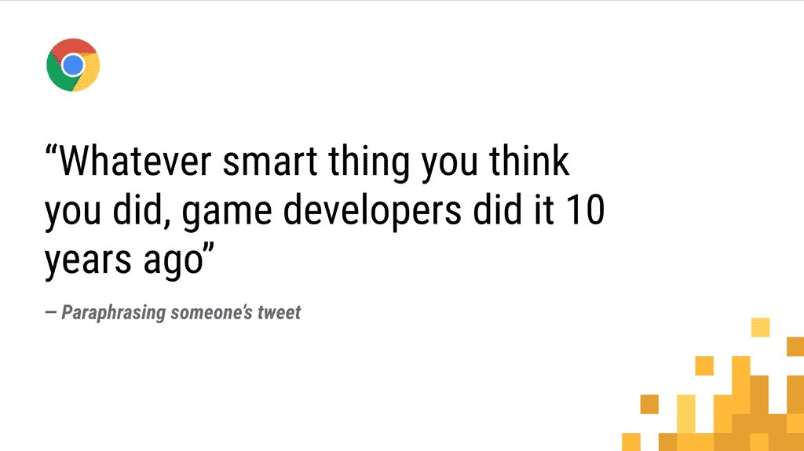

Web Advocate. Internetrovert. Craving simplicity, finding it nowhere. Engineer @Google
keybase.io/surmaLondon, UKdassur.ma1,337 Following
9,659 Followers
Surma@DasSurmaDec 27
📝 New post-🎄 blog post about architecture and web apps: The Actor Model and why I think it implies that DOM-in-workers is undesirable.

“An Actor, a model and an architect walk onto the web...” – DasSur.ma
dassur.ma
Surma@DasSurmaDec 27
📝 New post-🎄 blog post about architecture and web apps: The Actor Model and why I think it implies that DOM-in-workers is undesirable.
“An Actor, a model and an architect walk onto the web...” – DasSur.ma